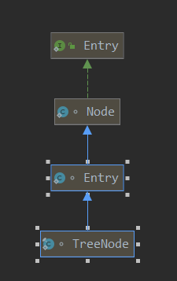

HashMap 1.8
1. 与1.7的区别
hashMap1.8与1.7的区别主要有两点：
- 由链表变成了链表加红黑树。
- 链表插入节点时，由头插法变成了尾插法。
- 原因是反正需要遍历整个链表是不是需要树化，所以直接用尾插法。
2. put方法
由于我们之前「HashMap1.7」已经详细说明了1.7的源码，而1.8与1.7又有很多相似之处，所以我们这里就不做太详细的分析，主要对不同之处做下详细分析。 PS:这里需要说明下，因为1.8用到了红黑树，所以可以先看下《红黑树》
1. put方法
1public V put(K key, V value) {
2 // 这里我们先直接看hash方法。
3 return putVal(hash(key), key, value, false, true);
4}
5
6static final int hash(Object key) {
7 int h;
8 // 这里其实有一个细节：key不能为空，因为为空的时候就会报错了（key.hashCode()）。
9 // 而我们应该知道，在1.7里key是可以为null的。
10 return (key == null) ? 0 : (h = key.hashCode()) ^ (h >>> 16);
11}
这里的hash方法其实比1.7的就简单多了，原因就是1.7中因为只有链表，所以为了提高查询的效率，必须尽量减少hash碰撞，所以做了很多位移等相关操作。而1.8之所以不用做这么的复杂处理是因为数据结构多了红黑树，本身查询效率就大大增加了，所以就不用耗费更多的CPU的资源来获取key的hash值了。
2. putVal(int hash, K key, V value, boolean onlyIfAbsent, boolean evict)
1// 后两个参数我们后续再说 TODO
2// onlyIfAbsent 参数的意义就是在map中找到已存在相同的key需要怎么处理：是什么也不做还是用新值覆盖旧值。可以看第41行代码。
3final V putVal(int hash, K key, V value, boolean onlyIfAbsent,
4 boolean evict) {
5 // Node跟1.7的Entry几乎完全一样。
6 Node<K,V>[] tab; Node<K,V> p; int n, i;
7 if ((tab = table) == null || (n = tab.length) == 0)
8 // 初始化的时候要调用resize方法，这个方法非常重要，我们会详细说，这里先略过。 详情查看2. final Node<K,V>[] resize() 。
9 n = (tab = resize()).length;
10 if ((p = tab[i = (n - 1) & hash]) == null)
11 // 找到这个key对应的table数组的index，如果为空，表明是第一次有元素插入这个位置。 newNode方法没什么可看的。就是new了一个节点，并把这个节点的next指向null（因为是首次插入）。
12 tab[i] = newNode(hash, key, value, null);
13 else {
14 // 不为空就表示存在链表或者树，就分别进行处理。
15 Node<K,V> e; K k;
16 // 首次查询就找到相同key的节点。
17 if (p.hash == hash &&
18 ((k = p.key) == key || (key != null && key.equals(k))))
19 e = p;
20 else if (p instanceof TreeNode)
21 // 如果是红黑树（不是链表）则进行红黑树的插入。这个是重点，会进行详细分析。
22 e = ((TreeNode<K,V>)p).putTreeVal(this, tab, hash, key, value);
23 else {
24 // 是链表且最开始没找到，就遍历整个链表。
25 for (int binCount = 0; ; ++binCount) {
26 if ((e = p.next) == null) {
27 // 不存在key的映射，就新增一个节点，用的是尾插法。
28 p.next = newNode(hash, key, value, null);
29 // TREEIFY_THRESHOLD 初始化值为8。
30 if (binCount >= TREEIFY_THRESHOLD - 1)
31 // 我们可以推算出当链表转换为红黑树时，链表中的元素至少为9个（因为在这里还新插入了一个）。
32 treeifyBin(tab, hash);
33 break;
34 }
35 if (e.hash == hash &&
36 ((k = e.key) == key || (key != null && key.equals(k))))
37 break;
38 p = e;
39 }
40 }
41 if (e != null) { // 存在key，就进行覆盖旧值。这里主要还跟onlyIfAbsent 参数相关。
42 V oldValue = e.value;
43 if (!onlyIfAbsent || oldValue == null)
44 e.value = value;
45 // 空的方法，在LinkedHashMap中做了处理。
46 afterNodeAccess(e);
47 return oldValue;
48 }
49 }
50 ++modCount;
51 // size加一，并判断是否需要扩容。
52 if (++size > threshold)
53 // 详情查看2. resize() 。
54 resize();
55 afterNodeInsertion(evict);
56 return null;
57}
1. Node节点
1// 可以看下1.7的Entry的数据结构，可以说一模一样。
2static class Node<K,V> implements Map.Entry<K,V> {
3 final int hash;
4 final K key;
5 V value;
6 Node<K,V> next;
7
8 Node(int hash, K key, V value, Node<K,V> next) {
9 this.hash = hash;
10 this.key = key;
11 this.value = value;
12 this.next = next;
13 }
14
15 public final K getKey() { return key; }
16 public final V getValue() { return value; }
17 public final String toString() { return key + "=" + value; }
18
19 public final int hashCode() {
20 return Objects.hashCode(key) ^ Objects.hashCode(value);
21 }
22
23 public final V setValue(V newValue) {
24 V oldValue = value;
25 value = newValue;
26 return oldValue;
27 }
28
29 public final boolean equals(Object o) {
30 if (o == this)
31 return true;
32 if (o instanceof Map.Entry) {
33 Map.Entry<?,?> e = (Map.Entry<?,?>)o;
34 if (Objects.equals(key, e.getKey()) &&
35 Objects.equals(value, e.getValue()))
36 return true;
37 }
38 return false;
39 }
40}
2. final void treeifyBin(Node<K,V>[] tab, int hash)
注意，这是TreeNode的方法。 这个方法的目的就是把链表树化。
1final void treeifyBin(Node<K,V>[] tab, int hash) {
2 int n, index; Node<K,V> e;
3 if (tab == null || (n = tab.length) < MIN_TREEIFY_CAPACITY)
4 resize();
5 else if ((e = tab[index = (n - 1) & hash]) != null) {
6 TreeNode<K,V> hd = null, tl = null;
7 do {
8 // 查看2.1 replacementTreeNode
9 TreeNode<K,V> p = replacementTreeNode(e, null);
10 if (tl == null)
11 // 这个的作用就是把链表的头结点作为双向链表的头结点，目的就是为了之后的树化做准备。
12 hd = p;
13 else {
14 // 目的就是组成双向链表。
15 p.prev = tl;
16 tl.next = p;
17 }
18 tl = p;
19 } while ((e = e.next) != null);
20 if ((tab[index] = hd) != null)
21 // 接下来进行树化，查看2.2 treeify(Node<K,V>[] tab)
22 hd.treeify(tab);
23 }
24}
2.1 replacementTreeNode
1TreeNode<K,V> replacementTreeNode(Node<K,V> p, Node<K,V> next) {
2 // 很简单，就是把节点由Node类型转换为TreeNode类型。
3 return new TreeNode<>(p.hash, p.key, p.value, next);
4}
5
6// 先简单看下TreeNode的属性，pre就是起到双向链表的作用。
7static final class TreeNode<K,V> extends LinkedHashMap.Entry<K,V> {
8 TreeNode<K,V> parent; // red-black tree links
9 TreeNode<K,V> left;
10 TreeNode<K,V> right;
11 TreeNode<K,V> prev; // needed to unlink next upon deletion
12 boolean red;
13 TreeNode(int hash, K key, V val, Node<K,V> next) {
14 super(hash, key, val, next);
15 }
16}
TreeNode继承关系：

2.2 treeify(Node<K,V>[] tab)
注意，这是TreeNode的方法。
1final void treeify(Node<K,V>[] tab) {
2 TreeNode<K,V> root = null;
3 // 这里首先说明下，根据hd.treeify(tab)可知，this就是hd，也就是双向链表的头结点。
4 // 这个循环的作用是遍历链表，一个一个插入红黑树。
5 for (TreeNode<K,V> x = this, next; x != null; x = next) {
6 next = (TreeNode<K,V>)x.next;
7 x.left = x.right = null;
8 // 第一次遍历的时候，先获取root节点。
9 if (root == null) {
10 x.parent = null;
11 // 红黑树的特性，根节点一定是黑色。
12 x.red = false;
13 root = x;
14 }
15 else {
16 K k = x.key;
17 int h = x.hash;
18 Class<?> kc = null;
19 // 这个循环的目的是查找当前节点要插入的位置。
20 for (TreeNode<K,V> p = root;;) {
21 int dir, ph;
22 K pk = p.key;
23 // 比较大小，确定查询的方向是左边还是右边。
24 // 这里有一个需要注意的是，比较大小比较的是hash值。
25 if ((ph = p.hash) > h)
26 dir = -1;
27 else if (ph < h)
28 dir = 1;
29 // 这部分单独拿出来说下，查看 2.2.1
30 else if ((kc == null &&
31 (kc = comparableClassFor(k)) == null) ||
32 (dir = compareComparables(kc, k, pk)) == 0)
33 dir = tieBreakOrder(k, pk);
34
35 TreeNode<K,V> xp = p;
36 // 一直找，找到叶子节点处，然后插入节点。
37 if ((p = (dir <= 0) ? p.left : p.right) == null) {
38 x.parent = xp;
39 // 这里是判断插入的节点是其父节点的左子节点还是右子节点。
40 if (dir <= 0)
41 xp.left = x;
42 else
43 xp.right = x;
44 // 修正红黑树，保持树的平衡。查看2.3 balanceInsertion
45 root = balanceInsertion(root, x);
46 break;
47 }
48 }
49 }
50 }
51 // 确保树的root是第一个节点。
52 moveRootToFront(tab, root);
53}
2.2.1
1else if ((kc == null &&
2 // 2.2.1.1 comparableClassFor
3 (kc = comparableClassFor(k)) == null) ||
4 // 2.2.1.2 compareComparables
5 (dir = compareComparables(kc, k, pk)) == 0)
6 dir = tieBreakOrder(k, pk);
这块代码的意思就是当直接比hash值大小比不出结果的话，就看看key实现comparable接口没有，实现的话就用compareTo接口进行比较。如果没有实现，或者比较的结果依然相等，那就直接调用System.identityHashCode方法比较，反正一定要比出个大小。 2.2.1.1 comparableClassFor
1static Class<?> comparableClassFor(Object x) {
2 if (x instanceof Comparable) {
3 Class<?> c; Type[] ts, as; Type t; ParameterizedType p;
4 if ((c = x.getClass()) == String.class) // bypass checks
5 return c;
6 if ((ts = c.getGenericInterfaces()) != null) {
7 for (int i = 0; i < ts.length; ++i) {
8 if (((t = ts[i]) instanceof ParameterizedType) &&
9 ((p = (ParameterizedType)t).getRawType() ==
10 Comparable.class) &&
11 (as = p.getActualTypeArguments()) != null &&
12 as.length == 1 && as[0] == c) // type arg is c
13 return c;
14 }
15 }
16 }
17 return null;
18}
就是获取实现了compareble接口的Class。 2.2.1.2 compareComparables
1static int compareComparables(Class<?> kc, Object k, Object x) {
2 return (x == null || x.getClass() != kc ? 0 :
3 ((Comparable)k).compareTo(x));
4}
实现了compareble接口的话就用compareTo接口比较大小。 2.2.1.3 tieBreakOrder
1static int tieBreakOrder(Object a, Object b) {
2 int d;
3 if (a == null || b == null ||
4 (d = a.getClass().getName().
5 compareTo(b.getClass().getName())) == 0)
6 d = (System.identityHashCode(a) <= System.identityHashCode(b) ?
7 -1 : 1);
8 return d;
9}
System.identityHashCode方法的意思是忽略用户重写的hashCode方法，直接调用系统获取hashCode的方法获取hash值。
2.3 balanceInsertion
注意，这是TreeNode的方法。 这部分就是红黑树的再平衡，可以参考《红黑树》
1static <K,V> TreeNode<K,V> balanceInsertion(TreeNode<K,V> root,
2 TreeNode<K,V> x) {
3 x.red = true;
4 for (TreeNode<K,V> xp, xpp, xppl, xppr ;;) {
5 if ((xp = x.parent) == null) {
6 x.red = false;
7 return x;
8 }
9 // 父节点为黑色或者父节点为根节点，直接插入。
10 else if (!xp.red || (xpp = xp.parent) == null)
11 return root;
12 // 以下情况均为插入节点的父节点为红色（因为父节点为黑色的情况已经在上边处理过了）。
13 // 插入节点的父节点是其父节点的左子节点。
14 if (xp == (xppl = xpp.left)) {
15 // 叔叔节点存在且为红色。
16 if ((xppr = xpp.right) != null && xppr.red) {
17 // 染色：把父节点和叔叔节点染成黑色，祖父节点染成红色。
18 xppr.red = false;
19 xp.red = false;
20 xpp.red = true;
21 // 把祖父节点作为当前节点，并继续处理。
22 x = xpp;
23 }
24 else { // 叔叔节点不存在或者为黑色节点。
25 // 新插入节点为其父节点的右子节点（LR红色情况）
26 if (x == xp.right) {
27 // 将xP进行左旋。将xP设置为当前节点，得到LL红色情况。
28 root = rotateLeft(root, x = xp);
29 // 这个的意义就是把xp节点设置为当前节点，再按照LL红色的情况处理。
30 xpp = (xp = x.parent) == null ? null : xp.parent;
31 }
32 // 新插入节点为其父节点的左子节点（LR红色情况）
33 // 将xP设置为黑色，将xPP设置为红色。
34 if (xp != null) {
35 xp.red = false;
36 if (xpp != null) {
37 xpp.red = true;
38 // 对PP节点进行右旋。
39 root = rotateRight(root, xpp);
40 }
41 }
42 }
43 }
44 // 插入节点的父节点是其父节点的右子节点。
45 else { // 叔叔节点存在且为红色。
46 if (xppl != null && xppl.red) {
47 // 染色：把父节点和叔叔节点染成黑色，祖父节点染成红色。
48 xppl.red = false;
49 xp.red = false;
50 xpp.red = true;
51 // 把祖父节点作为当前节点，并继续处理。
52 x = xpp;
53 }
54 else { // 叔叔节点不存在或者为黑色节点。
55 // 新插入节点为其父节点的左子节点（RL红色情况）
56 if (x == xp.left) {
57 // 将xP进行右旋。
58 root = rotateRight(root, x = xp);
59 // 这个的意义就是把xp节点设置为当前节点，再按照RR红色的情况处理。
60 xpp = (xp = x.parent) == null ? null : xp.parent;
61 }
62 // 新插入节点为其父节点的右子节点（RR红色情况）
63 // 将xP设置为黑色，将xPP设置为红色
64 if (xp != null) {
65 // 将xP设置为黑色，将xPP设置为红色。
66 xp.red = false;
67 if (xpp != null) {
68 xpp.red = true;
69 // 对xPP节点进行左旋。
70 root = rotateLeft(root, xpp);
71 }
72 }
73 }
74 }
75 }
76}
2.4 左旋
注意，这是TreeNode的方法。 这部分就是红黑树的左旋，可以参考《红黑树》
1static <K,V> TreeNode<K,V> rotateLeft(TreeNode<K,V> root,
2 TreeNode<K,V> p) {
3 TreeNode<K,V> r, pp, rl;
4 if (p != null && (r = p.right) != null) {
5 // p的右子节点的左子节点变为p的右子节点。
6 if ((rl = p.right = r.left) != null)
7 rl.parent = p;
8 if ((pp = r.parent = p.parent) == null)
9 // p的右子节点向上且变为了根节点，则根节点一定得是黑色。
10 (root = r).red = false;
11 else if (pp.left == p)
12 // 如果p是其父节点的左子节点，则r节点也必须是r节点的左子节点。
13 pp.left = r;
14 else
15 // 如果p是其父节点的右子节点，则r节点也必须是其父节点的右子节点。
16 pp.right = r;
17 // p变为r节点的左子节点。
18 r.left = p;
19 // r变为p节点的父节点。
20 p.parent = r;
21 }
22 // root可能发生了变化，所以要重新返回。
23 return root;
24}
2.5 右旋
注意，这是TreeNode的方法。 这部分就是红黑树的右旋，可以参考《红黑树》
1static <K,V> TreeNode<K,V> rotateRight(TreeNode<K,V> root,
2 TreeNode<K,V> p) {
3 TreeNode<K,V> l, pp, lr;
4 if (p != null && (l = p.left) != null) {
5 // p的左子节点的右子节点变为p的左子节点。
6 if ((lr = p.left = l.right) != null)
7 lr.parent = p;
8 if ((pp = l.parent = p.parent) == null)
9 // p的左子节点向上且变为了根节点，则根节点一定得是黑色。
10 (root = l).red = false;
11 else if (pp.right == p)
12 // 如果p是其父节点的右子节点，则l节点也必须是其父节点的左子节点。
13 pp.right = l;
14 else
15 // 如果p是其父节点的左子节点，则l节点也必须是其父节点的右子节点。
16 pp.left = l;
17 // p变为l节点的右子节点。
18 l.right = p;
19 // l变为p节点的父节点。
20 p.parent = l;
21 }
22 // root可能发生了变化，所以要重新返回。
23 return root;
24}
2.6 moveRootToFront
注意，这是TreeNode的方法。 这个代码也很好理解，因为在把链表树化前（查看 2. final void treeifyBin(Node<K,V>[] tab, int hash)），维护了一个双向链表，在这里就是把root节点作为双向链表的头结点。
1static <K,V> void moveRootToFront(Node<K,V>[] tab, TreeNode<K,V> root) {
2 int n;
3 if (root != null && tab != null && (n = tab.length) > 0) {
4 int index = (n - 1) & root.hash;
5 TreeNode<K,V> first = (TreeNode<K,V>)tab[index];
6 if (root != first) {
7 Node<K,V> rn;
8 tab[index] = root;
9 TreeNode<K,V> rp = root.prev;
10 if ((rn = root.next) != null)
11 ((TreeNode<K,V>)rn).prev = rp;
12 if (rp != null)
13 rp.next = rn;
14 if (first != null)
15 first.prev = root;
16 // 这里就可以看到之前（查看 2. final void treeifyBin(Node<K,V>[] tab, int hash)）维护的双向链表的作用了。
17 root.next = first;
18 root.prev = null;
19 }
20 assert checkInvariants(root);
21 }
22}
3. putTreeVal
主要目的就是在红黑树插入节点。如果存在一模一样的key的话，就把对应的node返回，为后续覆盖做准备。
1final TreeNode<K,V> putTreeVal(HashMap<K,V> map, Node<K,V>[] tab,
2 int h, K k, V v) {
3 Class<?> kc = null;
4 boolean searched = false;
5 TreeNode<K,V> root = (parent != null) ? root() : this;
6 // 这一部分跟2.2 treeify(Node<K,V>[] tab)很类似，可以参考上边的解析。
7 for (TreeNode<K,V> p = root;;) {
8 int dir, ph; K pk;
9 if ((ph = p.hash) > h)
10 dir = -1;
11 else if (ph < h)
12 dir = 1;
13 else if ((pk = p.key) == k || (k != null && k.equals(pk)))
14 return p;
15 else if ((kc == null &&
16 (kc = comparableClassFor(k)) == null) ||
17 (dir = compareComparables(kc, k, pk)) == 0) {
18 if (!searched) {
19 TreeNode<K,V> q, ch;
20 searched = true;
21 if (((ch = p.left) != null &&
22 (q = ch.find(h, k, kc)) != null) ||
23 ((ch = p.right) != null &&
24 (q = ch.find(h, k, kc)) != null))
25 return q;
26 }
27 dir = tieBreakOrder(k, pk);
28 }
29
30 TreeNode<K,V> xp = p;
31 if ((p = (dir <= 0) ? p.left : p.right) == null) {
32 Node<K,V> xpn = xp.next;
33 // 在插入树的同时还维护一个链表。尾插法。
34 TreeNode<K,V> x = map.newTreeNode(h, k, v, xpn);
35 if (dir <= 0)
36 xp.left = x;
37 else
38 xp.right = x;
39 // 维护一个链表。
40 xp.next = x;
41 x.parent = x.prev = xp;
42 if (xpn != null)
43 ((TreeNode<K,V>)xpn).prev = x;
44 // 参看2.5 moveRootToFront
45 moveRootToFront(tab, balanceInsertion(root, x));
46 return null;
47 }
48 }
49}
4. resize()
这个的作用是既用来扩容，也用来初始化。
1final Node<K,V>[] resize() {
2 // 前边这些主要是为了初始化初始容量和阈值，跟1.7的大同小异，就不细说了。
3 Node<K,V>[] oldTab = table;
4 int oldCap = (oldTab == null) ? 0 : oldTab.length;
5 int oldThr = threshold;
6 int newCap, newThr = 0;
7 if (oldCap > 0) {
8 if (oldCap >= MAXIMUM_CAPACITY) {
9 threshold = Integer.MAX_VALUE;
10 return oldTab;
11 }
12 else if ((newCap = oldCap << 1) < MAXIMUM_CAPACITY &&
13 oldCap >= DEFAULT_INITIAL_CAPACITY)
14 newThr = oldThr << 1; // double threshold
15 }
16 else if (oldThr > 0) // initial capacity was placed in threshold
17 newCap = oldThr;
18 else { // zero initial threshold signifies using defaults
19 newCap = DEFAULT_INITIAL_CAPACITY;
20 newThr = (int)(DEFAULT_LOAD_FACTOR * DEFAULT_INITIAL_CAPACITY);
21 }
22 if (newThr == 0) {
23 float ft = (float)newCap * loadFactor;
24 newThr = (newCap < MAXIMUM_CAPACITY && ft < (float)MAXIMUM_CAPACITY ?
25 (int)ft : Integer.MAX_VALUE);
26 }
27 threshold = newThr;
28 @SuppressWarnings({"rawtypes","unchecked"})
29 Node<K,V>[] newTab = (Node<K,V>[])new Node[newCap];
30 table = newTab;
31 if (oldTab != null) {
32 for (int j = 0; j < oldCap; ++j) {
33 Node<K,V> e;
34 // 不为空说明这里有树或者链表。分别进行处理。
35 if ((e = oldTab[j]) != null) {
36 oldTab[j] = null;
37 if (e.next == null)
38 // 只有一个元素，直接移过去。
39 newTab[e.hash & (newCap - 1)] = e;
40 else if (e instanceof TreeNode)
41 // 树的话需要进行拆分，这里会详细解释。
42 ((TreeNode<K,V>)e).split(this, newTab, j, oldCap);
43 else { // preserve order
44 // 链表的话也会拆分，这里也会详细解释。
45 Node<K,V> loHead = null, loTail = null;
46 Node<K,V> hiHead = null, hiTail = null;
47 Node<K,V> next;
48 do {
49 next = e.next;
50 if ((e.hash & oldCap) == 0) {
51 if (loTail == null)
52 loHead = e;
53 else
54 loTail.next = e;
55 loTail = e;
56 }
57 else {
58 if (hiTail == null)
59 hiHead = e;
60 else
61 hiTail.next = e;
62 hiTail = e;
63 }
64 } while ((e = next) != null);
65 if (loTail != null) {
66 loTail.next = null;
67 newTab[j] = loHead;
68 }
69 if (hiTail != null) {
70 hiTail.next = null;
71 newTab[j + oldCap] = hiHead;
72 }
73 }
74 }
75 }
76 }
77 return newTab;
78}
4.1 扩容时链表的拆分
首先说下理论基础，扩容后，同一个链表上的元素，最多只会出现在新的table表的两个位置： 要么是原来的index的位置，要么是oldCapacity + index 的位置。 具体原因可以查看**2.4.2.1 transfer(newTable, false)**处。 所以这里的处理思路就是：把链表拆成两部分，一部分为”高位“，一部分为”低位“。 然后直接把拆分后的链表整个移动到新的table。而在1.7里是一个一个移的。
1Node<K,V> loHead = null, loTail = null;
2Node<K,V> hiHead = null, hiTail = null;
3Node<K,V> next;
4do {
5 next = e.next;
6 if ((e.hash & oldCap) == 0) {
7 // 这里就是会移动到index位的，组成一个链表。
8 if (loTail == null)
9 loHead = e;
10 else
11 loTail.next = e;
12 loTail = e;
13 }
14 else { // 这里就是会移动到index + oldCapacity 位的，组成一个链表。
15 if (hiTail == null)
16 hiHead = e;
17 else
18 hiTail.next = e;
19 hiTail = e;
20 }
21} while ((e = next) != null);
22if (loTail != null) {
23 // 移动整个链表。
24 loTail.next = null;
25 newTab[j] = loHead;
26}
27if (hiTail != null) {
28 // 移动整个链表。
29 hiTail.next = null;
30 newTab[j + oldCap] = hiHead;
31}
4.2 扩容时树的拆分 split
目的跟 4.1 扩容时链表的拆分很像，也是拆成高位和低位。
1// bit就是oldCapcity
2final void split(HashMap<K,V> map, Node<K,V>[] tab, int index, int bit) {
3 TreeNode<K,V> b = this;
4 // Relink into lo and hi lists, preserving order
5 TreeNode<K,V> loHead = null, loTail = null;
6 TreeNode<K,V> hiHead = null, hiTail = null;
7 int lc = 0, hc = 0;
8 // 红黑树内部还维护了一个双向链表的作用就在这里，为了拆分时方便遍历。
9 for (TreeNode<K,V> e = b, next; e != null; e = next) {
10 next = (TreeNode<K,V>)e.next;
11 e.next = null;
12 if ((e.hash & bit) == 0) {
13 // 这里就是会移动到index位的，先组成一个链表。
14 if ((e.prev = loTail) == null)
15 loHead = e;
16 else
17 loTail.next = e;
18 loTail = e;
19 ++lc;
20 }
21 else { // 这里就是会移动到index + oldCapacity 位的，组成一个链表。
22 if ((e.prev = hiTail) == null)
23 hiHead = e;
24 else
25 hiTail.next = e;
26 hiTail = e;
27 ++hc;
28 }
29 }
30
31 if (loHead != null) {
32 // 这里的UNTREEIFY_THRESHOLD默认值为6，也就是链表的长度小于等于6的时候就进行树的退化。
33 if (lc <= UNTREEIFY_THRESHOLD)
34 tab[index] = loHead.untreeify(map);
35 else {
36 // 链表长度大于6的时候就进行树化。
37 tab[index] = loHead;
38 if (hiHead != null) // (else is already treeified)
39 // 如果高位不存在，说明整棵树都没拆，直接把整棵树移过去就行。
40 loHead.treeify(tab);
41 }
42 }
43 if (hiHead != null) {
44 if (hc <= UNTREEIFY_THRESHOLD)
45 tab[index + bit] = hiHead.untreeify(map);
46 else {
47 tab[index + bit] = hiHead;
48 if (loHead != null)
49 hiHead.treeify(tab);
50 }
51 }
52}
4.3 untreeify
树的退化。 很简单，就是把TreeNode再变成Node。
1final Node<K,V> untreeify(HashMap<K,V> map) {
2 Node<K,V> hd = null, tl = null;
3 for (Node<K,V> q = this; q != null; q = q.next) {
4 Node<K,V> p = map.replacementNode(q, null);
5 if (tl == null)
6 hd = p;
7 else
8 tl.next = p;
9 tl = p;
10 }
11 return hd;
12}
至此，put方法就结束了。
5.get方法
get方法没什么可说的，代码已经很明显了。
1public V get(Object key) {
2 Node<K,V> e;
3 return (e = getNode(hash(key), key)) == null ? null : e.value;
4}
5
6final Node<K,V> getNode(int hash, Object key) {
7 Node<K,V>[] tab; Node<K,V> first, e; int n; K k;
8 if ((tab = table) != null && (n = tab.length) > 0 &&
9 (first = tab[(n - 1) & hash]) != null) {
10 if (first.hash == hash && // always check first node
11 ((k = first.key) == key || (key != null && key.equals(k))))
12 return first;
13 if ((e = first.next) != null) {
14 if (first instanceof TreeNode)
15 return ((TreeNode<K,V>)first).getTreeNode(hash, key);
16 do {
17 if (e.hash == hash &&
18 ((k = e.key) == key || (key != null && key.equals(k))))
19 return e;
20 } while ((e = e.next) != null);
21 }
22 }
23 return null;
24}
6.remove
1public V remove(Object key) {
2 Node<K,V> e;
3 return (e = removeNode(hash(key), key, null, false, true)) == null ?
4 null : e.value;
5}
6
7final Node<K,V> removeNode(int hash, Object key, Object value,
8 boolean matchValue, boolean movable) {
9 Node<K,V>[] tab; Node<K,V> p; int n, index;
10 if ((tab = table) != null && (n = tab.length) > 0 &&
11 (p = tab[index = (n - 1) & hash]) != null) {
12 Node<K,V> node = null, e; K k; V v;
13 if (p.hash == hash &&
14 ((k = p.key) == key || (key != null && key.equals(k))))
15 node = p;
16 else if ((e = p.next) != null) {
17 if (p instanceof TreeNode)
18 node = ((TreeNode<K,V>)p).getTreeNode(hash, key);
19 else {
20 do {
21 if (e.hash == hash &&
22 ((k = e.key) == key ||
23 (key != null && key.equals(k)))) {
24 node = e;
25 break;
26 }
27 p = e;
28 } while ((e = e.next) != null);
29 }
30 }
31 if (node != null && (!matchValue || (v = node.value) == value ||
32 (value != null && value.equals(v)))) {
33 if (node instanceof TreeNode)
34 ((TreeNode<K,V>)node).removeTreeNode(this, tab, movable);
35 else if (node == p)
36 tab[index] = node.next;
37 else
38 p.next = node.next;
39 ++modCount;
40 --size;
41 afterNodeRemoval(node);
42 return node;
43 }
44 }
45 return null;
46}
47
48final void removeTreeNode(HashMap<K,V> map, Node<K,V>[] tab,
49 boolean movable) {
50 int n;
51 if (tab == null || (n = tab.length) == 0)
52 return;
53 int index = (n - 1) & hash;
54 TreeNode<K,V> first = (TreeNode<K,V>)tab[index], root = first, rl;
55 TreeNode<K,V> succ = (TreeNode<K,V>)next, pred = prev;
56 if (pred == null)
57 tab[index] = first = succ;
58 else
59 pred.next = succ;
60 if (succ != null)
61 succ.prev = pred;
62 if (first == null)
63 return;
64 if (root.parent != null)
65 root = root.root();
66 if (root == null || root.right == null ||
67 (rl = root.left) == null || rl.left == null) {
68 tab[index] = first.untreeify(map); // too small
69 return;
70 }
71 TreeNode<K,V> p = this, pl = left, pr = right, replacement;
72 if (pl != null && pr != null) {
73 TreeNode<K,V> s = pr, sl;
74 while ((sl = s.left) != null) // find successor
75 s = sl;
76 boolean c = s.red; s.red = p.red; p.red = c; // swap colors
77 TreeNode<K,V> sr = s.right;
78 TreeNode<K,V> pp = p.parent;
79 if (s == pr) { // p was s's direct parent
80 p.parent = s;
81 s.right = p;
82 }
83 else {
84 TreeNode<K,V> sp = s.parent;
85 if ((p.parent = sp) != null) {
86 if (s == sp.left)
87 sp.left = p;
88 else
89 sp.right = p;
90 }
91 if ((s.right = pr) != null)
92 pr.parent = s;
93 }
94 p.left = null;
95 if ((p.right = sr) != null)
96 sr.parent = p;
97 if ((s.left = pl) != null)
98 pl.parent = s;
99 if ((s.parent = pp) == null)
100 root = s;
101 else if (p == pp.left)
102 pp.left = s;
103 else
104 pp.right = s;
105 if (sr != null)
106 replacement = sr;
107 else
108 replacement = p;
109 }
110 else if (pl != null)
111 replacement = pl;
112 else if (pr != null)
113 replacement = pr;
114 else
115 replacement = p;
116 if (replacement != p) {
117 TreeNode<K,V> pp = replacement.parent = p.parent;
118 if (pp == null)
119 root = replacement;
120 else if (p == pp.left)
121 pp.left = replacement;
122 else
123 pp.right = replacement;
124 p.left = p.right = p.parent = null;
125 }
126 TreeNode<K,V> r = p.red ? root : balanceDeletion(root, replacement);
127 if (replacement == p) { // detach
128 TreeNode<K,V> pp = p.parent;
129 p.parent = null;
130 if (pp != null) {
131 if (p == pp.left)
132 pp.left = null;
133 else if (p == pp.right)
134 pp.right = null;
135 }
136 }
137 if (movable)
138 moveRootToFront(tab, r);
139}
remove方法有一个点需要说下，就是这段代码。关于树的退化。不是直接判断树的节点是不是小于6个，而是根据树的结构进行判断的。
1if (root == null || root.right == null ||
2 (rl = root.left) == null || rl.left == null) {
3 tab[index] = first.untreeify(map); // too small
4 return;
5}